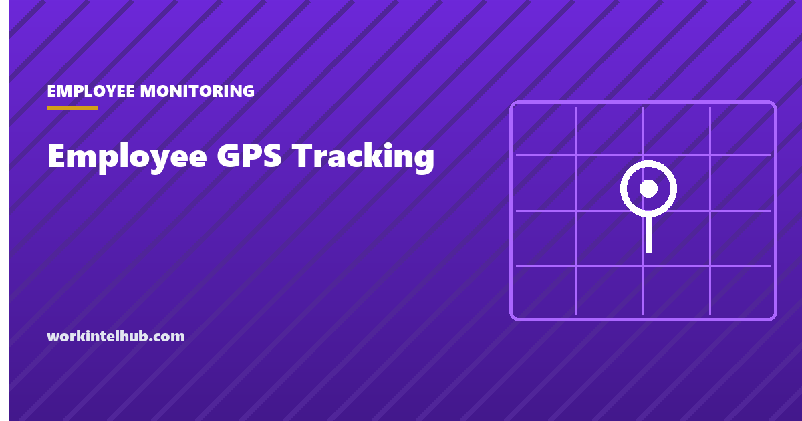

Employee GPS Tracking

GPS tracking of employees is mostly lawful, mostly on company assets, and the part that gets employers into trouble is rarely the tracking itself. It is tracking outside working hours, tracking a vehicle the company does not own, or tracking without telling anyone in a state that requires notice.
This page separates those cases, because the answer genuinely differs between them, and the single most repeated claim on this subject is wrong in a way that matters.
Whose consent, exactly
Start here, because most summaries of this subject blur it.
California Penal Code section 637.7 prohibits using an electronic tracking device to determine the location or movement of a person. The exception is the one that decides employment cases: it does not apply where the registered owner, lessor or lessee of the vehicle has consented.
Consent runs with the vehicle, not the driver. Where the company owns or leases the fleet vehicle, the company is the consenting party, and a driver's separate agreement is not what the statute requires. Where the employee owns the car, the employee is the owner and their consent is required, and no employer policy substitutes for it.
That is why "you need employee consent to use GPS" and "employers can freely track staff" are both wrong. The question is whose vehicle it is. Violation of the California provision is a misdemeanour, and several other states have comparable tracking-device statutes.
Note what this does not resolve. Being lawful under a tracking-device statute does not exempt you from a state's electronic monitoring notice law, from off-duty conduct protections, or from an invasion of privacy claim built on how the data was used rather than on whether it was collected.
Company vehicle, personal vehicle, personal phone
| What is tracked | General position | The catch |
|---|---|---|
| Company owned vehicle | Lawful in most states for a genuine business purpose | Notice duties still apply in some states; off-duty use is the exposure |
| Employee's personal vehicle | Requires the employee's consent as owner | Consent obtained as a condition of employment is weak ground |
| Company phone | Generally lawful with notice | The phone goes home; the vehicle does not have to |
| Employee's personal phone | Requires genuine agreement, and it can be withdrawn | In Maine an employee may decline outright |
The company phone row is the one underestimated. A tracked vehicle sits in a car park overnight. A tracked phone goes into the employee's home, and continuous location on a device that accompanies someone into their private life is a materially different proposition from knowing where a van is, whatever the ownership.
If you issue phones and track them, the defensible design is location tied to a shift or a task rather than running continuously. Our page on what monitoring should never collect covers where that line sits.
The states that require notice
Four states now require written notice of electronic monitoring, and GPS is treated differently in each.
26 M.R.S. section 620-A, in force since 14 July 2026, is the broadest and the most recent. It covers employer surveillance generally, expressly including GPS, and requires notice to applicants during hiring plus written notice to employees at least once every calendar year. It carves out GPS and vehicle safety systems installed on employer owned vehicles, so fleet tracking sits outside it while tracking an employee's own vehicle or phone does not. Employees may also decline to install surveillance software on a personal device, which is a right the other three states do not give.
Connecticut General Statutes section 31-48d requires prior written notice of the types of electronic monitoring an employer may engage in, plus a conspicuously posted notice. Delaware and New York have notice statutes framed around telephone, email and internet monitoring rather than location, so GPS sits less squarely inside them, which is a reason to give notice rather than to rely on the gap.
Our state-by-state guide sets out all four in full.
Off duty is where cases come from
The pattern in the disputes is consistent. The tracking was lawful, the vehicle was the company's, and the problem was that the system kept reporting at nine in the evening and on Sunday.
Three rules keep you clear of it.
- Track during working hours only. If the vehicle goes home, the tracker should stop when the shift does. Most fleet systems support a schedule; comparatively few employers configure one.
- Do not use location to police non-work behaviour. Location data revealing where someone spent Saturday is exactly the material that turns a fleet management tool into a claim, and several states protect lawful off-duty conduct.
- Set a retention period and hold to it. Location history is the most sensitive thing most employers hold. Ninety days covers nearly every legitimate operational need; keeping years of it creates risk in exchange for nothing.
There is also a category of location data that deserves separate handling regardless of lawfulness: visits to medical facilities, places of worship, union halls and lawyers' offices. A system that surfaces those to a manager is generating a discrimination problem out of a logistics tool.
What to actually implement
- Write down the business purpose first. Dispatch efficiency, safety response, mileage verification, customer arrival times. If you cannot name it, do not deploy it.
- Track assets, not people. Tie the record to the vehicle rather than the individual wherever the operational question allows it.
- Give written notice, everywhere. Required in four states and cheap in the other forty-six. Our monitoring acknowledgement form has wording that covers location.
- Bound it by schedule. Working hours only, and say so in the notice.
- Name who can see it, and make an employee's own location record available to them on request.
- Set retention and deletion, and check the vendor actually deletes rather than archives.
- Never track a personal vehicle without the owner's genuine, separately obtained consent, and accept that consent given to keep a job is weak evidence.
Item four does most of the work. Almost every GPS dispute would have been avoided by a system that stopped reporting at the end of the shift.
If you are the one being tracked
Two questions are worth asking, and neither is confrontational.
Whose vehicle is it? On a company vehicle during working hours, tracking is lawful nearly everywhere and there is little to contest. On your own vehicle, your consent as the owner is required, and you may withdraw it.
When does it run? This is the question that matters more than whether tracking exists. Ask whether it reports outside your shift, and ask for it in writing. In Maine you can also decline to install surveillance software on your personal phone. Our page on what your employer can see covers the device side.
Key takeaways
- Consent runs with the vehicle, not the driver. California Penal Code 637.7 asks the registered owner, lessor or lessee, which on a fleet vehicle is the company.
- Tracking an employee's own car requires their consent as owner, and no policy substitutes for it.
- Maine's law, in force since 14 July 2026, covers GPS expressly but carves out employer owned vehicles, and requires annual notice.
- In Maine an employee may decline to install surveillance software on a personal device.
- A tracked company phone goes home with the person. That is a different proposition from a tracked van, whoever owns it.
- Almost every GPS dispute would have been avoided by a system that stopped reporting at the end of the shift.
- Ninety days of location retention covers nearly every legitimate need. Years of it is risk in exchange for nothing.
Frequently asked questions
Is it legal for an employer to track employees by GPS?
On a company owned vehicle, during working hours, for a genuine business purpose, generally yes across most of the country. The exposures are tracking outside working hours, tracking a vehicle the employer does not own, and failing to give notice in a state that requires it.
Does an employer need employee consent for GPS tracking?
It depends whose vehicle it is. California Penal Code 637.7 requires consent from the registered owner, lessor or lessee, so on a company fleet vehicle the company itself is the consenting party. On an employee's personal vehicle the employee is the owner and their consent is required.
Can my employer track my personal car?
Not without your consent as the owner, and that is a real requirement rather than a formality. Consent extracted as a condition of employment is weak ground, because it cannot be freely refused. If you have not agreed, a tracker on your own vehicle is a serious matter.
Can my employer track my location outside working hours?
Legally it varies, but practically it is where nearly all disputes originate. Most fleet systems can be scheduled to report only during shifts, and an employer that has not configured that is collecting evening and weekend location data it has no operational use for. Several states also protect lawful off-duty conduct.
Does Maine's surveillance law cover GPS?
Yes, expressly, but it carves out GPS and vehicle safety systems installed on employer owned vehicles. So fleet tracking sits outside the notice duty while tracking an employee's own vehicle or personal device does not. The law also requires written notice to employees at least once each calendar year.
Can I refuse to install a tracking app on my personal phone?
In Maine, yes, explicitly: the law lets employees decline requests to install employer surveillance applications on personal devices. Elsewhere it is a negotiation rather than a right, and the reasonable middle ground is a company device for work that genuinely requires location.
How long should GPS location data be kept?
Ninety days covers nearly every legitimate operational need, including dispute resolution and mileage verification. Location history is among the most sensitive data an employer holds, so retaining years of it creates substantial risk without a matching benefit. Set the period, write it in the notice, and confirm the vendor deletes rather than archives.
What business reasons justify GPS tracking?
Dispatch and routing efficiency, safety and lone worker response, mileage and expense verification, and customer arrival times. The test is whether you can name the purpose before deployment. A system installed because the technology was available tends to be used for whatever it happens to reveal, which is how logistics tools become disputes.